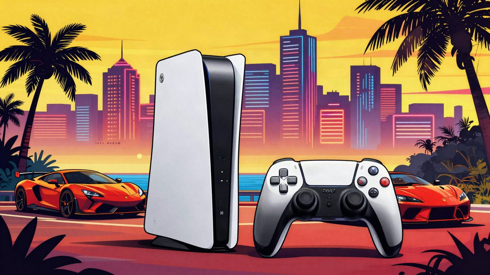

GTA 6 na Xbox Series X radi bolje nego na PS5, pokazuje analiza Digital Foundryja

Digital Foundry je usporedio performanse igre GTA 6 na sve četiri aktualne konzole. Xbox Series X ima manje padova frameratea od osnovnog PS5-a, dok je PS5 Pro i dalje najbolja konzolna opcija. Sve četiri konzole ograničene su na 30 FPS.
Digital Foundry je objavio analizu performansi igre GTA 6 na sve četiri aktualne konzole Microsofta i Sonyja. Series X je prošao znatno bolje od osnovnog PS5.
Vizualno razlike nema, prezentacija na obje konzole gotovo je identična. Razlika je u performansama. Obje konzole imaju problema pri vožnji kroz gust promet i u prizorima s velikom gužvom na aerodromu, ali PS5 ima znatno češće padove frameratea. Series X podržava i VRR na 120 Hz, što ublažava manje padove.
PS5 Pro i Series S
PS5 Pro je bolji i od Series X, pa je najbolji način za igranje GTA 6 dok se ne pojavi službena PC verzija. Usporedba Series X i PS5-a odnosi se na dvije osnovne konzole, a u njoj Series X ima prednost.
Series S je očekivano najslabiji od četiri uređaja. Framerate mu često pada u raspon tinejdžerskih vrijednosti sličica u sekundi. Zbog upscalinga i smanjenih najzahtjevnijih detalja slika izgleda bolje nego što se očekivalo. Digital Foundry ga ipak ne preporučuje kao najbolji način za igranje.
Ograničenje od 30 FPS
Razlike među konzolama su male. Sve četiri, i PS5 Pro, ograničene su na 30 FPS, pa je iskustvo na PS5-u i Series X-u uglavnom isto. PS5 je do sada bio istaknutiji u promociji igre, a Kotaku primjećuje da Microsoft nije htio ni spominjati izlazak igre na svojoj konzoli. Vlasnici Xboxa ipak imaju razlog za zadovoljstvo.
Izvor: Kotaku
Povezani članci

Rockstar: PS5 Pro nije dovoljno moćan za GTA VI na 60 kadrova u sekundi19. studenoga 2026.- Novi GTA VI trailer skriva referencu na prvu igru Grand Theft Auto iz 1997.19. listopada 2026.
 GTA 6 je najveće lansiranje u povijesti PlayStationa: više od 39 milijuna igrača na PS524. studenoga 2026.
GTA 6 je najveće lansiranje u povijesti PlayStationa: više od 39 milijuna igrača na PS524. studenoga 2026.